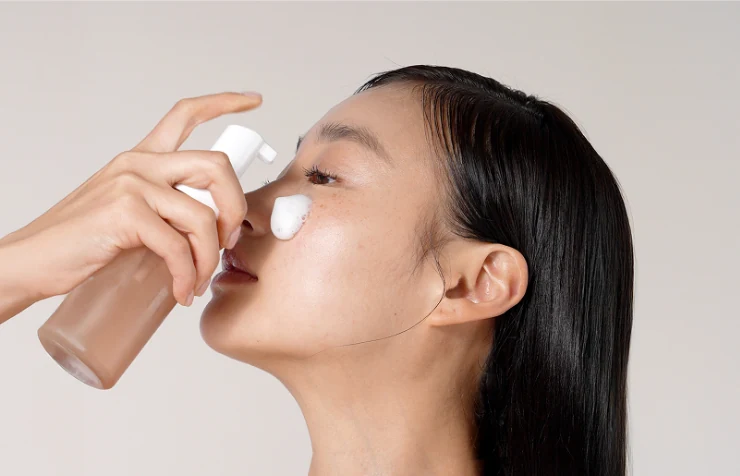
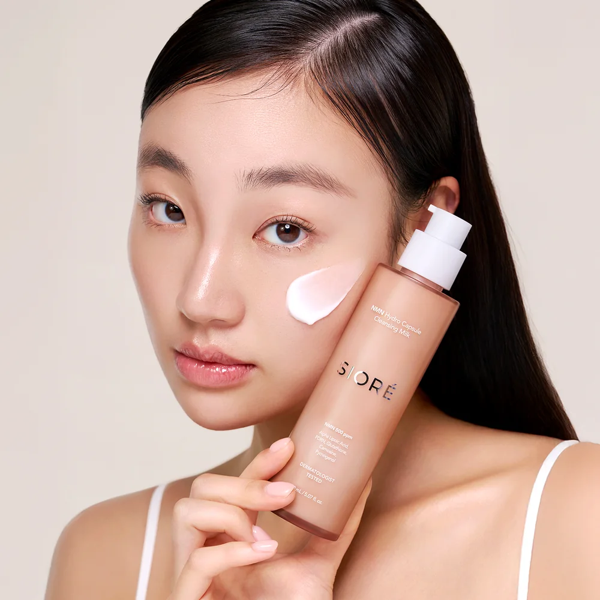
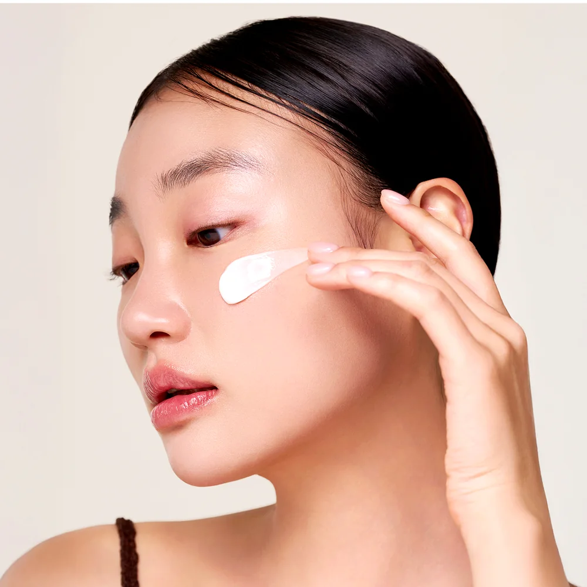

이미 찾는 고객을 만듭니다
TikTok·Instagram·샤오홍슈에서 제품과 약국 구매 맥락을 함께 노출합니다.
약국의 명분 → 신규·외국인 고객 유입
기존 브랜드 톤은 유지하고, 약사가 “그래서 거래할 이유”를 한눈에 이해하도록 정보 순서만 달리했습니다.
시오레의 마케팅은 조회수를 보여주는 데서 끝나지 않습니다. 콘텐츠로 관심을 만들고, 약국 상담 도구로 구매를 돕고, 가격 정책으로 재판매 질서를 보호합니다.
TikTok·Instagram·샤오홍슈에서 제품과 약국 구매 맥락을 함께 노출합니다.
임상 수치, 제품별 USP, 피부 고민별 추천 멘트를 상담 화면과 POP로 제공합니다.
약국 전용 가격 정책과 VMD 기준으로 무분별한 가격 경쟁보다 가치 판매를 지향합니다.
마케팅 지원을 “혜택 목록”이 아니라 약국 현장의 세 가지 질문에 답하는 구조로 보여줍니다.



지원 항목을 나열하기보다 ‘누가 무엇을 맡아 매출 기회를 만드는지’를 한눈에 보여주는 파트너 구조형입니다.
SNS·크리에이터·글로벌 채널에서 시오레와 K-약국의 구매 이유를 알립니다.
상권과 고객 국적에 맞춰 촬영·다국어 콘텐츠·매장 노출을 연결합니다.
제품 USP, 임상 수치, 피부 고민별 추천 흐름으로 약사의 설명을 돕습니다.
루틴·세트 제안과 지속 콘텐츠로 단품 구매를 관리 고객으로 확장합니다.